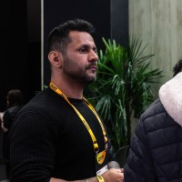

Microservices · Event-Driven Architecture · Cloud · Java/Kotlin
20+ years building scalable integration systems for e-commerce platforms and marketplaces.
Software Architect with 20+ years building production systems at scale. Specialized in integration systems for e-commerce, leveraging expertise in microservices and event-driven architecture. Currently focused on pioneering integration solutions at GuBee, delivering a robust hub connecting platforms and marketplaces.
Led the design and development of an integration hub connecting e-commerce platforms and marketplaces using microservices, Apache Kafka and TDD
Deep expertise in Java, Kotlin, Quarkus, Spring Boot, with infrastructure on AWS and Kubernetes
Experience spanning system architecture, team leadership, and technical consulting across e-commerce, telecom, and enterprise sectors
GuBee is a SaaS integration hub that connects e-commerce platforms (VTEX, Shopify, WooCommerce, Magento) with major Brazilian marketplaces (Mercado Livre, Amazon, Magalu, Shopee, and 30+ others). As the sole architect since the company's inception, I designed the entire distributed system from scratch and have been evolving it ever since, leading a growing engineering team.
Serasa Experian is Brazil's largest credit bureau. I joined the Biometrics Product team as Tech Lead, responsible for the platform that handles identity verification through biometric data — a critical product in Brazil's growing digital identity ecosystem.
Atos is a global IT services company. During nearly five years at Atos, I worked as a system architect embedded in major enterprise clients — NET/Claro (telecom), Multiplus Fidelidade (loyalty), and Carrefour (retail). My role combined architecture definition, team leadership, technical proposals, and hands-on integration work using Oracle's enterprise middleware stack.
Infracommerce is one of Brazil's leading full-service e-commerce operations companies. I joined as project leader and software architect for the ACEC platform — a white-label e-commerce solution that powered major retail brands. The platform was built on a service-oriented architecture with clearly separated layers for administration, sales, and ERP/legacy integration.
Accurate is a software consultancy that was later acquired by Infracommerce. During this period I led development teams on government projects for CPQD (one of Brazil's largest telecom R&D centers), building city administration systems. This role sharpened my skills in requirements engineering, estimation, and team leadership.
Short-term engagement at Atos embedded within Serasa (now Serasa Experian) — Brazil's largest credit bureau. This was my first exposure to the financial data and credit scoring domain, years before returning to Serasa as a Tech Lead in 2025.
LINT was a Londrina-based software house where I served as Tech Lead for government projects. The main engagement was developing a comprehensive city administration system for CPQD, managing the full project lifecycle from requirements through delivery.
Amadeus IT Group is a global technology company serving the travel and tourism industry. This role deepened my proficiency in requirements definition, architecture design, and Java enterprise development with the modern (for the era) Java EE stack.
BSI Tecnologia was a São Paulo-based software company specialized in financial sector applications. This is where my career began — starting as a junior developer and growing into team leadership and quality assurance over five years of working with some of Brazil's largest banks.
Primary stack — used daily in production systems
Infrastructure and deployment expertise
Data management and enterprise integration
Oracle & Sun Certifications
Oracle SOA Suite 11g Essentials
Oracle Certified Professional, Java SE 7
ITIL Foundation Certificate
Sun Certified Enterprise Architect (Java)
Sun Certified Associate for Java Platform
Sun Certified Business Component Developer (EE 5)
Sun Certified Business Component Developer (EE 1.3)
Sun Certified Web Component Developer
Sun Certified Programmer for Java Platform
Unifil — Centro Universitário Filadélfia
2014 – 2015
Universidade Tecnológica Federal do Paraná (UTFPR)
2003 – 2007
Feel free to reach out — whether it's about a project, a role, or a conversation about distributed systems and architecture.